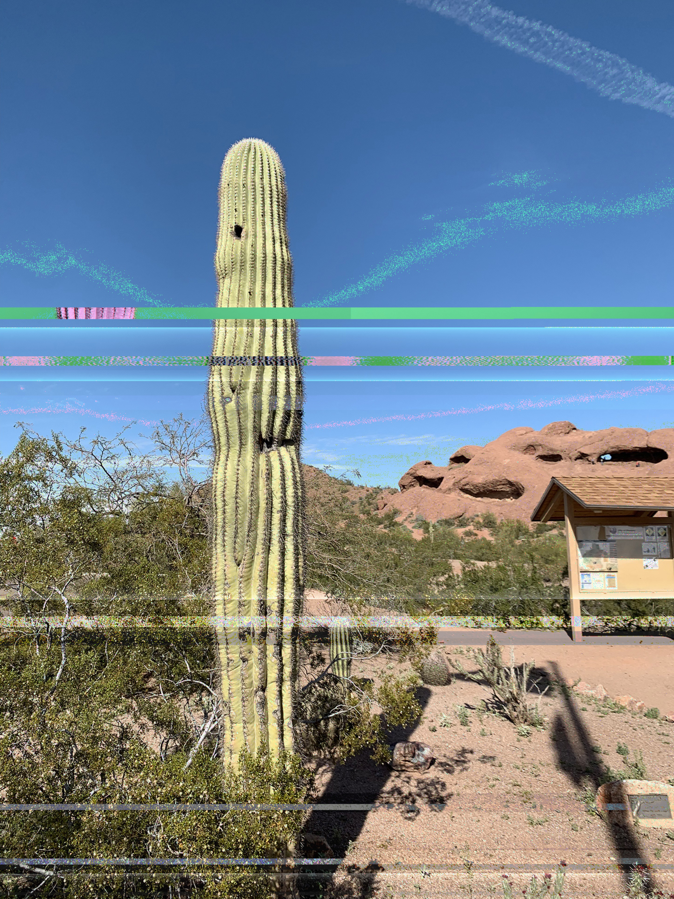
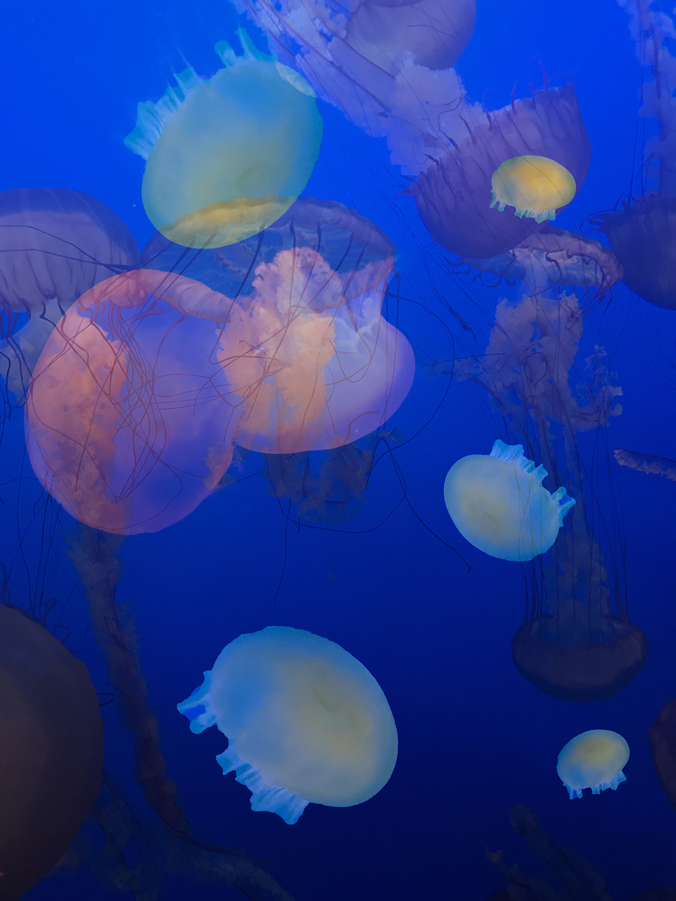
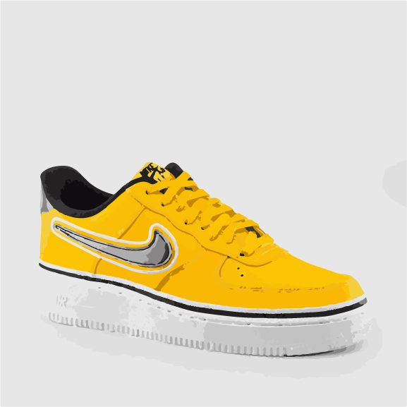
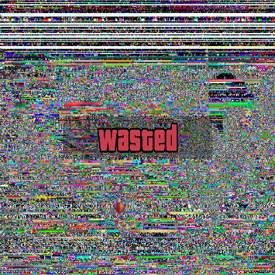
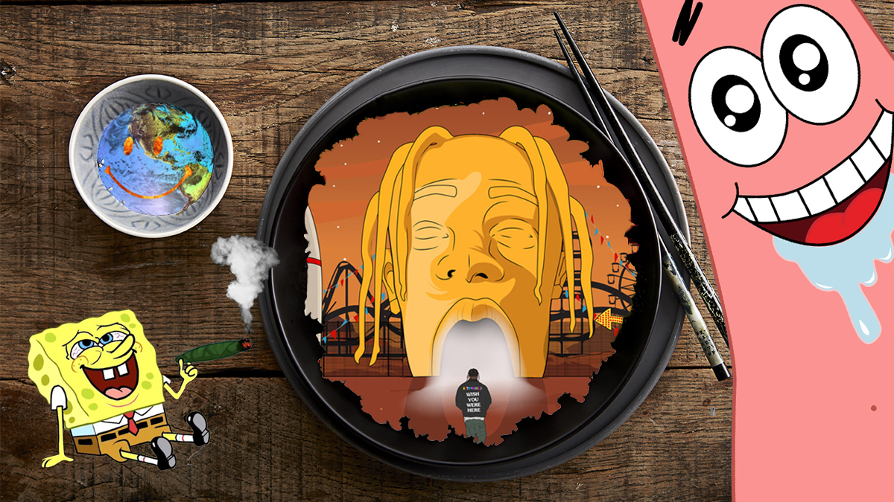

Glitch Arizona, Digital Image, 2019
This is a glitched digital image. I began with an original digital jpeg file, which was an image of a cactus in Arizona. This was a photo I took from Arizona State Park.


Composite Art, Digital Image, 2019
These two photos are digital composite image. One is using a screen capture of two jellyfish photography from Google and found images; The bottom one is using photoshop to create a emoji as a vector file.

Stargazing, Digital Sound, 1:02, 2018
This peice I created a timeout feeling sound with three recorded sound on campus. It was combing with three sounds which are zipping, swinging keys and sneezing shoes. This might be one of my favorite works bacause this is the first time I created my onw sound art with three piece of recorded sounds. It brought a lot of challenge for me, but I also had a lot of fun with it.
There Will Be Poop, Digital Video, 1:01, 2019
This digital vedio is my favorite video work so far. I directing and editing the whole video myself, I also do some of the shooting as well. The challenging of this project for me is, limiting the time is one thing I really concerened, but also need to ensure the quarlity.

Crazy Error, Interactive Net Art, 2019
This interactive net art piece is based on one of my earliest memories using a computer. I created an interpreted interactive experience based on this memory, which includes sevral images of the crazy error that we have seen, where the memory was experienced.
Click Here for Site

Eye Examination, Interactive Net Art using p5.js, 2019
This is a net art piece which uses the p5.js programming language to create an interactive eye examination and combing with glitch art.
Click Here for Site

Composite Art, Digital Image, 2019
Spongebob and Patrick always go to the concert together! Patrick is kinda a timorous star, but Spongebob is crazy! Which makes Patrick's got guts when stay with Spongebob. The reason is not cuz they like hip hop, but they can have an excuse to smoke with his buddy!